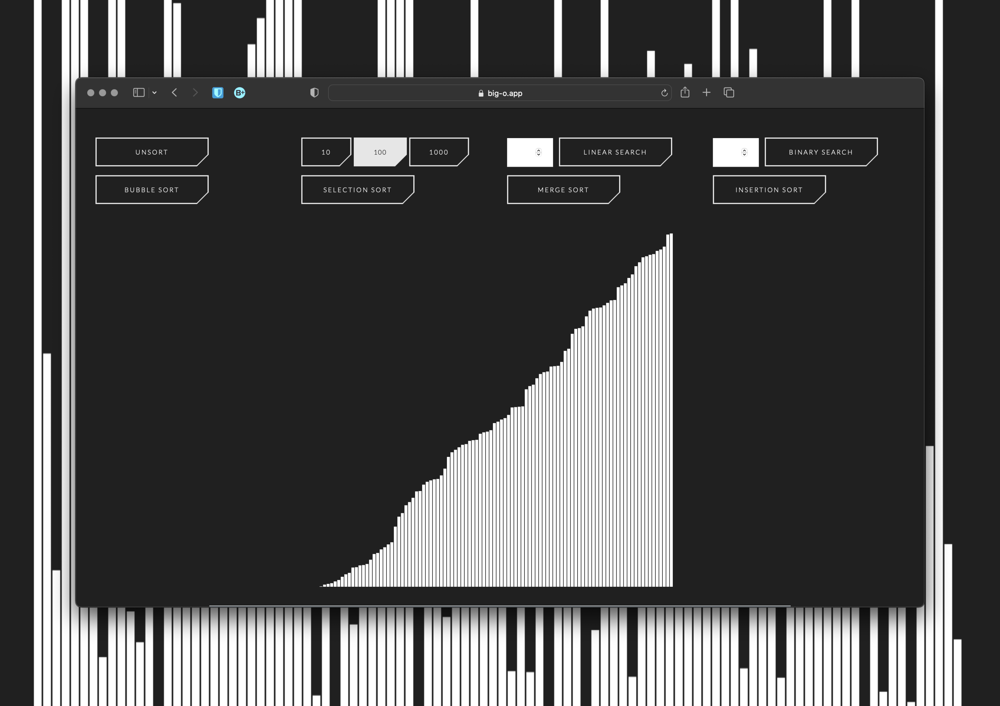

Data Structures and Algorithms Visualizer Project Walkthrough
Source Code

About
Originally a final project from CS50, where we were tasked to build web application using Flask, HTML, and CSS. Built an application based on algorithms to continue to learn, understand, and practice algorithmic programming. Furthermore, chose to visualize the algorithms to gain an even deeper understanding how the algorithms work and to make the application interactive.
Features
Visualize Linear Search, Binary Search, Bubble Sort, Selection Sort, Merge Sort, and Insertion Sort
Random numbers in an array are graphed as a bar chart
The values of the array are displayed and updated in an HTML table below the bar chart
They are also accessible through a tooltip that displays the value when hovered over
The Javascript Execution times are logged in cards to allow comparison of different algorithm runtimes and for further information on the Big-O
Technologies
Front-End
React
Typescript
Javascript ES6+
D3.js
CSS Modules
Sass
CSS
Production
Netlify
Design and Architecture
D3 Library for data visualization because D3 is the ideal solution for data visualization problems and to challenge myself with learning a new framework.
Initially built this application with a backend server using the Python framework, Flask, which was primarily used for its Jinja templating capabilities. The application was hosted on the free tier plan on Heroku, alongside two other application using the free tier plan. The main problem with this approach was that it was both heavy and expensive. It was heavy in that Jinja wasn't strictly neccessary to achieve templating. It was expensive in that the free tier plan on Heroku put the app to sleep after 30 minutes. Furthermore, using kaffeine to circumvent sleeping caused the free dyno minutes to expire by the 24th of each month. Therefore, after learning about React and the Jamstack, I put the two together and refactored this application by migrating from a server-based architecture with Flask to a static website architecture with Create-React-App Typescript Progressive Web App (PWA), and by switching cloud-hosting providers from Heroku to Netlify. The code is more simple with React doing all the work and more secure with being statically typed with Typescript. The website has better performance, offline capability, and 100% uptime as a PWA.
Initially all the javascript for controlling 95% of the application was stored in one file. Refactoring the application with React opened the opporunity to use split the logic into modular chunks that live in their own files. Now React components only load the logic that they need and the code-splitting enables more organized code.
Initially syled with Bootstrap 4 to quickly style the application and to shift focus towards spending more time on the data visualization and underlying algorithms. After shipping the minimum viable product to production, went back and refactored the frontend with CSS Modules and Sass since the file size and load-time of Bootstrap was expensive relative to how much I was using it the website. I used less than 10 Boostrap classes. There are a number of benefits of using CSS Modules and Sass. Similar to the point above, CSS Modules allows React components to only load the resources, in this case styling, that they need, and CSS Modules promotes code-splitting enables more organized code. Sass, compared to vanilla CSS, allows nesting and variable definitions. Now the code is modular and more DRY. However, I noticed that CSS Modules isn't compatible with D3 since D3 doesn't have access to the hashed classnames generated by CSS Modules. Therefore, I included one vanilla CSS file referenced at the root of the application for D3 to have constant access to.